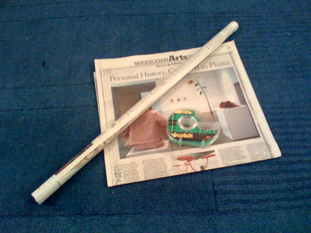
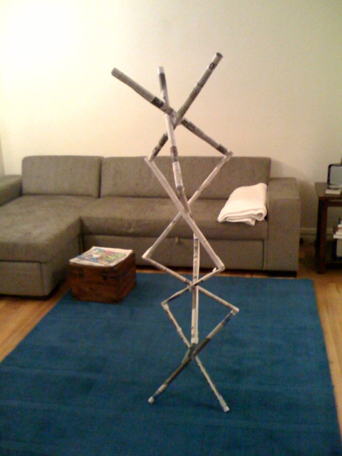

Free-standing newspaper and tape structures
Friday January 18, 2008
I've taken to writing brief letters to members of my immediate family on the occasions of their birthdays. When Noelle was turning six, I fleshed out the letter beyond "Happy birthday" by challenging her to make the tallest free-standing structure she could using only newspaper and tape.

My letter was lost in Menasha for some time, but then this week I got a reply in the mail, with a picture from Noelle and a message scribed by my mom. I was pleased that Noelle had actually attempted the task, and if her results were unspectacular, perhaps it was not such a bad effort for a six-year-old.
Having been challenged by a six-year-old, however, I had little choice but to develop an answer to the little engineer's question: "How big is yours?"
I used an issue of The New York Times and Scotch tape. With no limits on the amounts of these materials, you can really do a lot. I elected to transform full newspaper pages into tubes of fairly small diameter and base my construction on these elements. You can get a very small diameter if you wrap the paper around a pencil initially, which makes for a fairly rigid beam. I only made one in this way, however. The other eleven were slightly looser.

I think construction from thin tubes in this way is a pretty good approach, although there may be others. The particular constraints and possibilities of the problem as a whole make for a nice and easily implemented design activity. I think it could be used easily in schools at a wide range of levels, for problem solving, engineering, team building, or even mathematics.
My initial idea was to tape the tubes as the edges of a triangular prism. I somehow didn't realize that this structure is not rigid and that taping the corners would be difficult. Next I tried a tetrahedron, which is rigid but does not easily suggest a lot of height. Investigating how best to join the corners of a tetrahedron, I hit upon the design I settled on, made from components of three tubes joined at their centers like three-dimensional Cartesian axes, and then stacked. Four of these components, for a total of 12 page-tubes, reached 4' 10". I am confident considerably more impressive results could be had from more refined efforts.

How big is yours?
{kind=link}
{kind=link}
This post was originally hosted elsewhere.